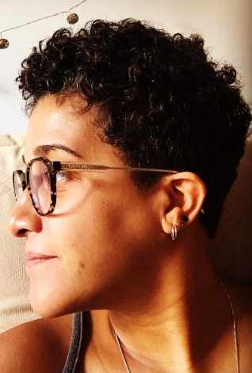

Novo · em desenvolvimento
Projeto autoral · 2026
Operação Futebol
Um jogo inteiro no ar com dois cliques.
- HTML/CSS
- JavaScript
- Node.js
Motion · Broadcast Design · Código
Mais de 10 anos de grafismo ao vivo na TV Globo. Hoje também construo os sistemas por trás dele.
Meu trabalho já foi ao ar em
Projetos selecionados
Projeto autoral · 2026
Um jogo inteiro no ar com dois cliques.
Software autoral
Anima no After. Vai ao ar ao vivo. Sem refazer nada.
Eleições 2026 · TV
27 estados. 1 operador. Zero digitação.
Projeto autoral · v4
Grafismo de emissora numa pasta. No ar em 30 segundos.
Lyric video · Motion
A letra vira imagem.
Como eu trabalho
Quem opera, em quanto tempo e o que não pode falhar.
Figma e After Effects, com tipografia medida para qualquer nome.
HTML/CSS, Viz, JavaScript, Node e VBScript, ligados direto ao dado.
Testes automáticos, ensaio, manual e treinamento.

Sobre
Do desenho na UFRJ ao audiovisual: mais de 10 anos no grafismo ao vivo da TV Globo. Com a pós em Full Stack e Engenharia de Software em curso, construo as ferramentas que a operação precisa.
Engenharia de Software (em curso) · Pós em Desenvolvimento Full Stack · Produção Audiovisual · Desenho, UFRJ
Freelance · remoto · PT / EN
Grafismo para live e transmissão, motion e overlays para OBS e vMix. Conte o que precisa e quando vai ao ar.